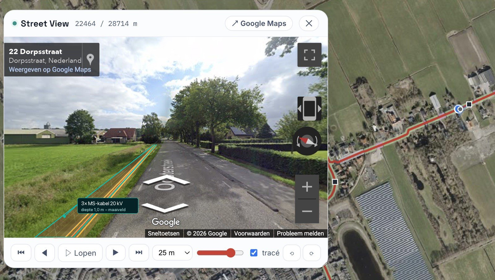
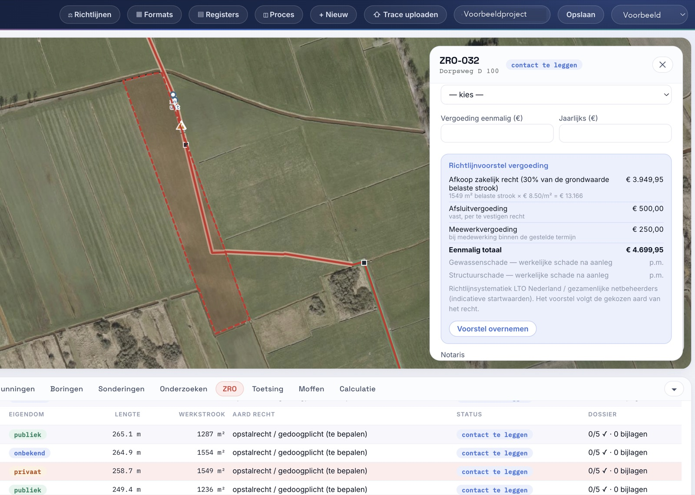

Energietransitie
Netuitbreiding op middenspanning: nieuwe 10/20 kV-kabelverbindingen tussen onder- en schakelstations, voor het aansluiten van duurzame opwek en het oplossen van netcongestie.
Van projectstart tot definitief ontwerp
Van de eerste projectschets tot een definitief ontwerp dat klaar is voor de aannemer. Met onze eigen procestool ontwerpen we middenspanningsverbindingen en transportleidingen voor de energie- en watertransitie sneller, zonder in te leveren op vakmanschap.
Na ruim een jaar voorbereiding bundelen vier ervaren zelfstandigen hun kennis in VECTOR Engineering. Samen hebben we ruim 75 jaar ervaring in de ondergrondse infra voor energie en water, bij netbeheerders, waterbedrijven, aannemers en ingenieursbureaus. Daarnaast kunnen we terugvallen op een uitgebreid netwerk van specialisten in dit proces. Die ervaring combineren we met IT-kennis en onze eigen procestool. Zo ontwerpen we sneller en beter, van eerste schets tot definitief ontwerp.

Vakgebieden
Nieuwe middenspanningsverbindingen en transportleidingen lopen kilometers door het buitengebied en kruisen wegen, waterwegen, dijken en bestaande netten. Wij engineeren het hele tracé: van tracékeuze en diepteligging tot kruisingen, raakvlakken met bestaande infra en fasering naar uitvoering.

Netuitbreiding op middenspanning: nieuwe 10/20 kV-kabelverbindingen tussen onder- en schakelstations, voor het aansluiten van duurzame opwek en het oplossen van netcongestie.
Ondergrondse aanleg van transportleidingen voor drinkwater en industriewater, met de kruisingen en boringen die daarbij horen.
Diensten
Tracés voor middenspanningsverbindingen en transportleidingen, uitgewerkt van tracéstudie tot definitief ontwerp, met overdraagbare documentatie.
Tracéontwerpen, dwarsprofielen en projectinformatie sneller en beter, van eerste concept tot definitief ontwerp.
Gestructureerde projectinformatie, zodat tracékeuzes, diepteliggingen, raakvlakken en revisies traceerbaar en controleerbaar blijven.

Grondzaken en omgeving
Een tracé raakt altijd percelen, eigenaren en natuur. Onze tools koppelen het ontwerp aan kadaster- en omgevingsdata, zodat juridische en milieugevolgen vroeg zichtbaar zijn.
Project- en risicomanagement
Een ontwerp is pas beheersbaar als iedereen dezelfde stand van zaken ziet. Ons dashboard volgt elke stap en houdt risico’s en kosten actueel.
Werkwijze
Scope, uitgangspunten en randvoorwaarden helder. We sluiten aan op de fase waarin je project zit.
Eerste tracévarianten en globale ligging, met kansen, knelpunten en een kostenindicatie.
Tracékeuze en hoofdopzet van kabels en leidingen, met de eerste raakvlakken met bestaande infra.
Profielen, dieptes en kruisingen liggen vast. Raakvlakken en eisen zijn getoetst: het ontwerp is vergunningsgereed.
Ons werk eindigt bij het DO. De aannemer verzorgt het uitvoeringsontwerp en de realisatie.
Tijdwinst
Onderzoeken en vergunningen lopen gelijk op met het ontwerp en liggen niet langer op het kritiek pad.
De procestool versnelt analyse, kaarten en variantenafweging. Onze mensen valideren en kiezen.
Hulp bij tekenwerk, berekeningen en kostenraming. De beoordeling blijft mensenwerk.
Een kernteam van vier ervaren zelfstandigen, met een breed netwerk van specialisten op afroep, beperkt verliestijd tussen fases.
Samen goed voor circa 30%, per fase (IV–DO) vergeleken met een traditioneel traject.
Ons proces
Onze kracht zit in hoe het proces is ingericht: heldere stappen, herbruikbare controles en gestructureerde projectinformatie, zodat elke fase soepel overgaat in de volgende. Waar het iets toevoegt, zetten we AI in, bijvoorbeeld voor raakvlakanalyse. Altijd als extra laag bovenop de controle van de engineer.
Samenwerken
Veiligheid
Een graafschade aan een middenspanningskabel of transportleiding raakt mensen, netten en omgeving. Daarom is veiligheid bij ons geen eindcontrole, maar het uitgangspunt van elke ontwerpstap.
Alle bestaande kabels en leidingen zijn vanaf het begin in beeld. Onbekende netten benoemen we als risico, voordat er gegraven wordt.
Afstanden tot bestaande infra, leggingsdiepte en kruisingen toetsen we aan de geldende normen. Onze procestool controleert extra.
Veiligheid heeft een eigen score in het risicoregister, met oorzaak, gevolg en maatregel. Zo is zichtbaar wat er speelt en wie het oppakt.
Sneller ontwerpen, zonder concessies aan veiligheid.
Contact
Stuur een bericht. We reageren snel en denken concreet mee, van tracéstudie tot definitief ontwerp.